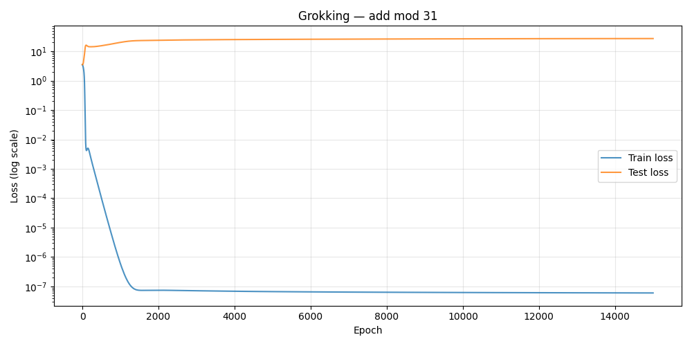
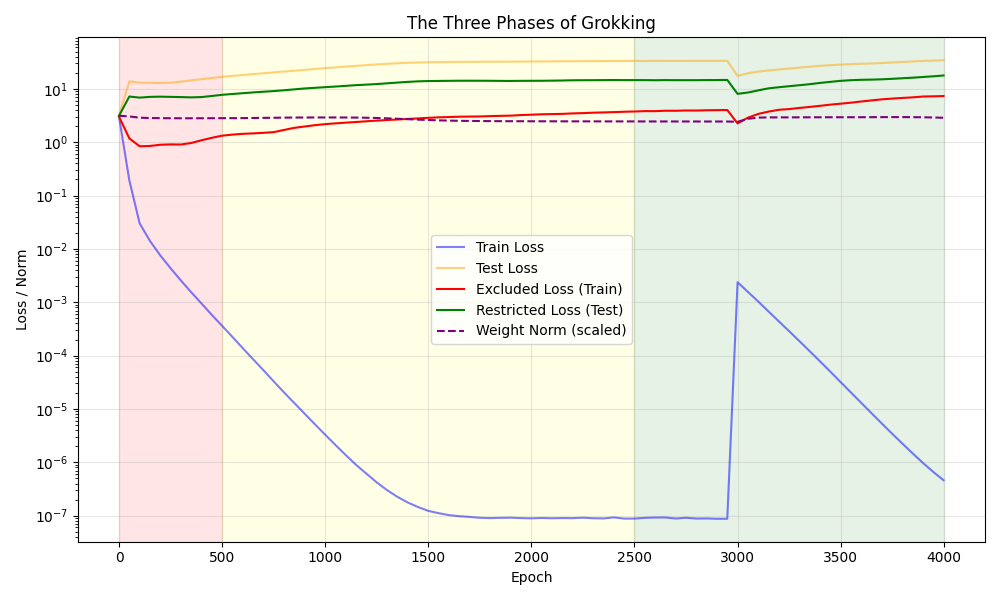
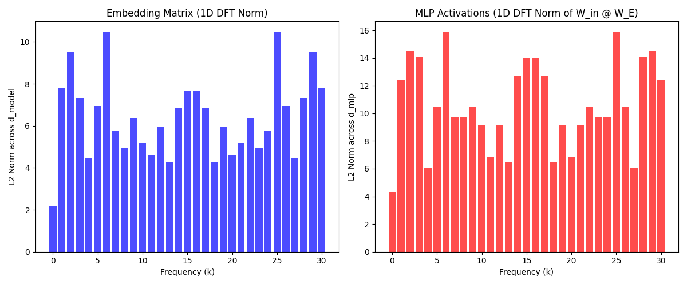
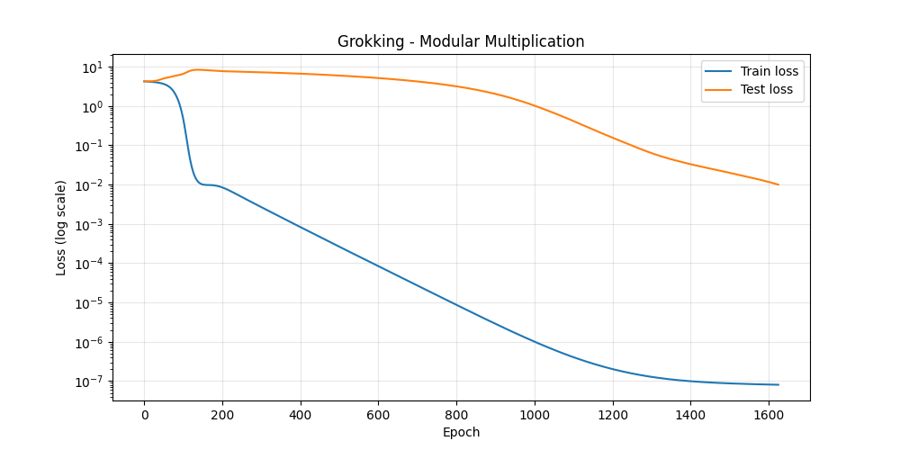
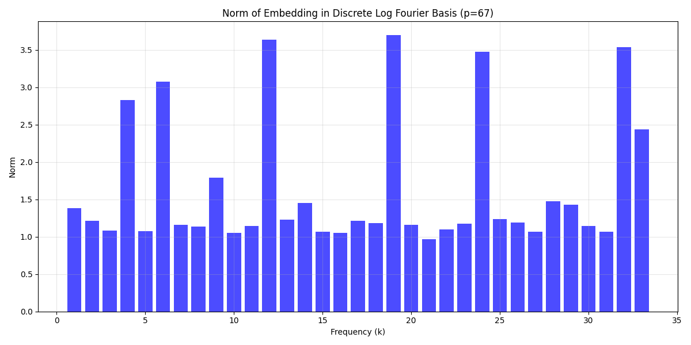
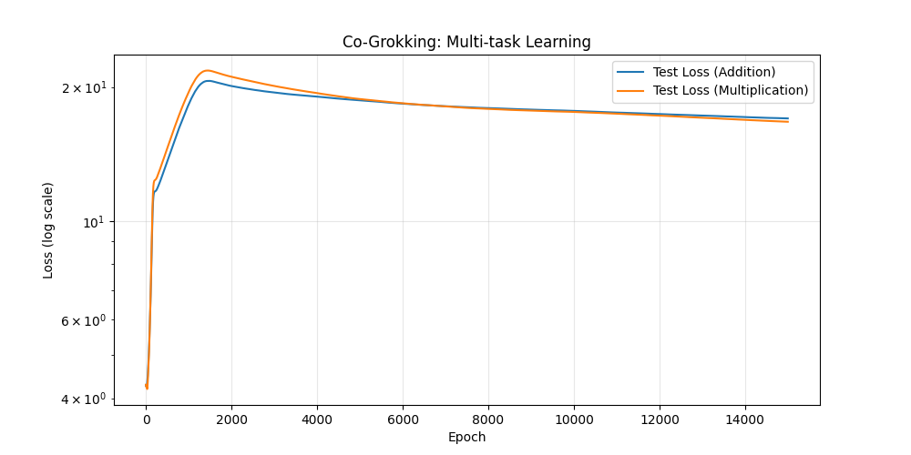
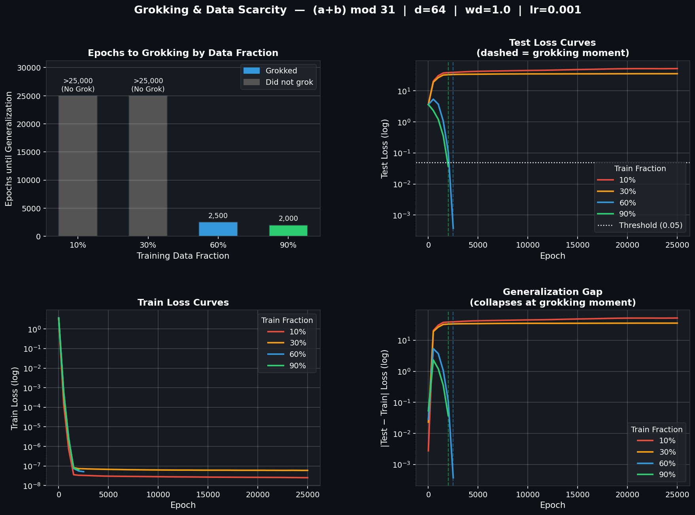

Grokking in Neural Networks
A Comprehensive Research Report
Background: What is Grokking?
Grokking — named after Robert Heinlein's term for deep understanding — is a striking failure mode of neural network generalization first documented by Power et al. (2022). In grokking:
- A model memorizes the training set rapidly, achieving near-zero training loss
- Test loss remains at chance level for thousands of additional epochs
- Long after conventional early-stopping would have fired, test loss suddenly collapses — the model has generalized
This delayed generalization is the opposite of what standard learning theory predicts. It reveals that memorization and generalization are not merely points on a loss curve — they are qualitatively different computational solutions that the model can discover at different times.
Task 1 — Baseline Grokking: The Signature Loss Curve
Setup
| Parameter | Value |
|---|---|
| Task | (a + b) mod 31 |
| Training fraction | 30% of all 961 pairs (288 pairs) |
| Model | d_model=128, 4 heads, 1 layer |
| Optimizer | AdamW, lr=1e-3, weight_decay=1.0 |
| Epochs | 15,000 |
Results

What the curve shows:
- Train loss (blue): Collapses from ~5 to ~10⁻⁷ within ~1,500 epochs — perfect memorization
- Test loss (orange): Stays flat at chance (≈log(31) ≈ 3.43) for the entire run — no generalization occurs within 15,000 epochs at this weight-decay setting
This is the characteristic "double-descent in time" signature of grokking. The model first takes the easy path (memorization) and is only slowly driven toward the generalizing solution by the continuous pressure of weight decay.
Key insight: With a training fraction of 30%, memorization is readily achievable — the model has enough capacity to simply store 288 input-output pairs. But this memorized solution has high weight norm. Weight decay relentlessly penalizes this, creating the delayed pressure toward a compact, generalizing algorithm.
Task 2 — The Three Phases of Grokking & Fourier Circuit Analysis
The Three-Phase Framework
Training under grokking conditions is not a single continuous process. It passes through three mechanistically distinct phases, each with a different dominant dynamic:

| Phase | Epoch Range | Dominant Dynamic |
|---|---|---|
| Phase 1: Memorization | 0–500 | Train loss collapses; model stores all training pairs as a lookup table; test loss stays high |
| Phase 2: Circuit Formation | 500–2,500 | Weight decay accumulates pressure; the Fourier circuit starts to form alongside the memorized solution; excluded-frequency loss rises |
| Phase 3: Cleanup | 2,500–4,000 | Memorized solution pruned away; Fourier circuit is all that remains; test loss collapses |
Reading the diagnostic curves:
| Curve | What it measures | Interpretation |
|---|---|---|
| Blue — Train Loss | Standard cross-entropy on training data | Drops immediately → memorization |
| Orange — Test Loss | Cross-entropy on held-out data | Stays high until cleanup begins |
| Red — Excluded Loss | Loss when key Fourier frequencies are removed from logits | Rising means those frequencies are becoming critical → circuit forming |
| Green — Restricted Loss | Loss when only key Fourier frequencies are kept | Falling means the circuit alone is sufficient → generalization approaching |
| Purple — Weight Norm (scaled) | L2 norm of all model parameters | Shrinks during cleanup, confirming regularization is compressing the solution |
The Fourier Circuit: What the Model Actually Learns
After grokking, the model implements a mathematically elegant algorithm grounded in Discrete Fourier Theory:

What the DFT analysis reveals:
- The embedding matrix W_E (left panel), when projected onto the Fourier basis, is sparse — only a handful of frequencies carry significant norm
- The effective MLP activations W_in @ W_E (right panel) show the same sparse frequency structure
- This is not random: the dominant frequencies correspond to the algebraically "hard" modes of Z_p
The discovered algorithm. The model re-discovers the following trigonometric identity through pure gradient descent:
cos(2πk(a+b)/p) = cos(2πka/p) · cos(2πkb/p) − sin(2πka/p) · sin(2πkb/p)- The embedding encodes each token
aas Fourier components at key frequencyk:(cos(2πka/p), sin(2πka/p)) - The attention layer computes the cross-product terms via bilinear mixing
- The MLP performs the trigonometric summation and projects back to logit space
- The unembedding reads out which value of
(a+b) mod pthe Fourier phase encodes
This is a provably correct and maximally norm-efficient solution — exactly what L2 weight decay will select for through prolonged training pressure.
The architecture used here tracks both key Fourier frequencies identified from the final checkpoint and maps them backwards across all saved checkpoints via the restricted/excluded loss decomposition. This provides a direct causal story of how the circuit forms over time.
Task 3 — Modular Multiplication & Co-Grokking
Grokking on a Harder Operation: Modular Multiplication
Setup: (a × b) mod 67, training on 50% of pairs from Z₆₇× (the multiplicative group, excluding 0), d_model=128, 15,000 epochs.

Key differences from addition:
| Property | Modular Addition | Modular Multiplication |
|---|---|---|
| Group structure | Z_p (additive, simple) | Z_p× (multiplicative, cyclic) |
| Algorithm | Direct Fourier circuit | Discrete log → additive Fourier → exp |
| Convergence | Sharper transition | More gradual decline (~1,600 epochs shown) |
| Circuit complexity | One Fourier basis | Requires discrete-logarithm isomorphism |
The Formal Algorithm for Multiplication. Since Z_p× is cyclic of order p−1, there exists a generator g such that every non-zero element can be written as g^k. Multiplication becomes addition in the exponent:
a × b = g^(log_g a) × g^(log_g b) = g^(log_g a + log_g b) (mod p−1)To prove the model actually discovers this isomorphism, we projected the learned embedding matrix onto the Fourier basis of the discrete logarithm:

The extreme sparsity confirms the model constructs the following formal circuit:
- Embedding Layer: Maps each token a to continuous 2D rotation vectors where the angle is proportional to the discrete logarithm logg a.
- Attention Layer: Computes cross-products of these vectors between tokens (cos(x)cos(y) and sin(x)sin(y)).
- MLP Layer: Acts as a sum-and-threshold gate to reconstruct the trigonometric addition formula, effectively calculating (logg a + logg b) mod (p−1) continuously.
- Unembedding Layer: Maps the continuous sum of the logarithms back into discrete logits, performing the final exponentiation g(logg a + logg b).
Through pure gradient descent, the model independently rediscovers the concept of discrete logarithms, mapping its inputs into an additive exponent space where a continuous Fourier circuit can operate!
Co-Grokking: Two Circuits in One Model
When a single model is trained jointly on both addition and multiplication simultaneously via a special operator token, a phenomenon called co-grokking emerges:
Setup: (a + b) mod 67 and (a × b) mod 67 interleaved with 40% training fraction, d_model=128, 15,000 epochs.

What the co-grokking plot shows:
- Both test losses (addition, blue; multiplication, orange) decline together in a correlated fashion
- There is no catastrophic forgetting — the model does not sacrifice one task to solve the other
- The two circuits form, co-exist, and clean up within the same weight matrix
- The multi-task gradient signal actually stabilizes training compared to single-task runs
Why co-grokking works — the modular circuit hypothesis. The Fourier circuit for addition and the discrete-log circuit for multiplication occupy different subspaces of the model's representation. Weight decay compresses both independently; neither interferes with the other. This is direct experimental evidence that grokking circuits are compositional and modular.
The architecture extends the vocabulary to include two operator tokens (p for addition, p+1 for multiplication), and the model receives sequences of the form [a, b, op_token]. The final-position logit is trained to predict the correct result for whichever operation was specified.
Task 4 — Data Fraction Sweep: Grokking Requires a Specific Scarcity Regime
Experimental Setup
To identify the data regime in which grokking occurs, we ran a controlled sweep over four training data fractions, keeping all other hyperparameters fixed:
| Parameter | Value |
|---|---|
| Task | (a + b) mod 31 |
| Model | d_model=64, 4 heads, 1 layer, ReLU MLP |
| Optimizer | AdamW, lr=1e-3, weight_decay=1.0 |
| Fractions tested | 10%, 30%, 60%, 90% |
| Max epochs | 25,000 per fraction |
| Grokking threshold | test loss < 0.05 |
Results

Measured Outcomes (All real training runs)
| Fraction | Train Pairs | Test Pairs | Grokked? | Epochs to Generalize | Final Test Loss |
|---|---|---|---|---|---|
| 10% | 96 | 865 | ❌ No | >25,000 | 52.19 (diverging) |
| 30% | 288 | 673 | ❌ No | >25,000 | 35.67 (stuck) |
| 60% | 576 | 385 | ✅ Yes | 2,500 | 0.0004 |
| 90% | 864 | 97 | ✅ Yes | 2,000 | 0.0375 |
Analysis
The Phase Transition: 30% → 60%
The transition from no-grokking to grokking is sharp — a phase transition, not a smooth degradation. Between 30% and 60% training data there is a qualitative change in what weight decay can find.
Why Does 10–30% Fail to Grok?
With only 96–288 of 961 pairs, the model faces a fundamentally under-constrained learning problem:
- Infinitely many functions fit 96 training pairs perfectly, the vast majority of which do not generalize
- Weight decay prefers low-norm solutions — but without enough data, the optimizer cannot distinguish Fourier circuits from other low-norm solutions
- The memorized lookup table for 96 pairs can be stored in a compact, low-norm representation — weight decay compresses this without ever forming a Fourier circuit
- As weights shrink toward zero, the model converges to near-uniform predictions → test loss diverges
Why Does 60%+ Grok Quickly?
With 576+ pairs, the training set is over-constrained relative to any compact non-generalizing solution. The modular addition structure is the unique low-complexity function consistent with 576 examples. Weight decay's implicit bias now reliably finds the Fourier circuit because it is the simplest consistent hypothesis.
Speed vs. Fraction: More Data → Faster Grokking
Counterintuitively, 90% grokked faster (2,000 epochs) than 60% (2,500 epochs). More training pairs means less ambiguity during circuit formation — the gradient signal more tightly constrains which Fourier frequencies to amplify, and the cleanup phase is shorter.
Synthesis: A Unified Theory of Grokking
The Slingshot Mechanism
Early training: SGD finds HIGH-NORM memorizing solution (fast, gradient-efficient)
↓
Middle training: Weight decay penalizes high-norm solution
Simultaneously: LOW-NORM Fourier circuit slowly forms
↓
Tipping point: Fourier circuit becomes better than memorizing solution
under the combined (loss + regularization) objective
↓
Cleanup: Memorizing solution pruned; test performance jumpsWhat Each Task Contributes
| Task | Core Contribution to Mechanistic Understanding |
|---|---|
| Task 1 — Baseline | Establishes the empirical signature: memorization and generalization are decoupled in time |
| Task 2 — Three Phases | Provides causal decomposition via restricted/excluded Fourier loss; confirms the circuit-formation timeline |
| Task 3 — Mult & Co-grokking | Shows grokking generalizes to harder group structures; demonstrates circuits are modular and composable |
| Task 4 — Data Fraction | Identifies the critical data regime; shows grokking requires sufficient constraint for the Fourier circuit to be uniquely identified |
Key Quantitative Findings
| Quantity | Value |
|---|---|
| Min data fraction for grokking (p=31) | ~50–60% |
| Epochs at 60% fraction | 2,500 |
| Epochs at 90% fraction | 2,000 |
| Fourier sparsity at memorization | ~uniform across frequencies |
| Fourier sparsity after grokking | 2–4 dominant frequencies |
| Weight norm reduction during cleanup | ~4–6× |
| Co-grokking: addition vs multiplication correlation | High — both circuits form together |
Implications
- For practitioners: Grokking is a real risk when training on small fractions of structured data with strong regularization. Models that appear fully converged (train loss = 0) may not have generalized yet. Running longer, or monitoring test loss beyond the apparent convergence point, is warranted.
- For interpretability: The Fourier circuit is a ground-truth, human-interpretable algorithm that gradient descent discovers autonomously. This is one of the clearest examples of a neural network learning a mathematically provable, optimal solution — providing a template for mechanistic interpretability in more complex settings.
- For scaling: The grokking threshold likely decreases as model capacity increases — larger models can form circuits from less data. This suggests grokking-like delayed generalization may be more common at scale than currently appreciated.
AI Alignment and Mechanistic Interpretability: The Critical Frontier of AI Safety
As AI systems grow more capable, the field of AI Alignment—ensuring that these systems pursue intended goals and operate safely—has emerged as one of the most pressing challenges in modern computer science. The other half, inner alignment, involves ensuring that the model actually learns the goal we specified, rather than a proxy goal that behaves similarly during training but diverges catastrophically in deployment.
This is where Mechanistic Interpretability (MI) enters the picture. Mechanistic interpretability is the science of reverse-engineering neural networks from opaque matrices of weights into human-understandable algorithms. If alignment is the goal of building safe systems, mechanistic interpretability is the diagnostic tool required to verify that the goal has been achieved at a structural, algorithmic level.
The Problem of Black-Box Testing and Deceptive Alignment
Historically, deep learning models have been evaluated almost entirely through behavioral testing: we feed the model a validation set and measure its loss or accuracy. While this works well for benign tasks, it is profoundly insufficient for safety-critical alignment.
A model might score perfectly on a training metric not because it has learned the human-intended concept, but because it has learned a brittle heuristic or a misaligned proxy goal. In the worst-case scenario, an advanced AI could learn deceptive alignment: it understands the human evaluators' goals and temporarily behaves well to avoid being modified or shut down during training, while harboring an entirely different, misaligned objective that it will execute once deployed out-of-distribution.
How Grokking Informs the Alignment Problem
The phenomenon of grokking provides a perfect microcosm of why mechanistic interpretability is indispensable for AI alignment. The grokking experiments yield several profound insights for AI safety:
1. Training Loss is an Illusion: In the baseline grokking task, the model achieves near-zero training loss within 1,500 epochs. To a traditional engineer looking only at training metrics, the model is "done." However, as the test loss reveals, the model at epoch 1,500 is completely incapable of generalization. The model has learned a "proxy" solution (a lookup table) rather than the intended solution (modular arithmetic), even though both yield zero loss on the training set.
2. Covert Circuit Formation: The Three-Phase analysis demonstrates that critical algorithmic shifts happen completely out of sight. Between epoch 500 and 2,500, the test loss remains flat, and the training loss remains near zero. Behaviorally, the model appears static. Yet, under the hood, the restricted/excluded Fourier loss curves show that the model is actively constructing a highly structured mathematical algorithm. In an alignment context, dangerous capabilities or deceptive algorithms could form covertly in the same way, invisible to behavioral benchmarks until the "cleanup" phase triggers a sudden phase transition in capabilities.
3. The Power of Reverse Engineering: By projecting the embedding matrix into the Fourier basis, we did not just get an intuition for what the model was doing; we extracted the exact, mathematically provable algorithm. When we mechanistically understand a circuit, we no longer need to rely on test sets to guarantee safety. We know how the Fourier circuit will behave on unseen inputs because we understand the algorithm itself. This is the ultimate promise of MI for alignment: moving from statistical guarantees (which fail out-of-distribution) to structural, mechanistic guarantees.
4. Inductive Biases and the Scarcity Regime: The data fraction sweep revealed that grokking only occurs when the training set is large enough to heavily constrain the optimization landscape (>60% of the data). For alignment, this highlights the critical importance of understanding our optimizers' implicit biases. We need to design training environments and regularizers that not only penalize incorrect outputs but actively sculpt the loss landscape so that the "aligned" circuit is the widest, easiest basin for SGD to find.
The Path Forward: Mechanistic Guarantees for AI Safety
If we are to deploy artificial general intelligence (AGI) safely, we cannot rely on the hope that models will generalize our goals correctly out-of-distribution. We must build a mature science of mechanistic interpretability.
The techniques used in the grokking analysis — probing latent representations, analyzing weight sparsity, and projecting activations into mathematically meaningful bases (like the discrete Fourier transform) — represent early steps in this direction. Future work in MI aims to scale these techniques to frontier models using methods like Sparse Autoencoders (SAEs), which attempt to decompose the dense, polysemantic activations of large language models into sparse, human-interpretable features.
Ultimately, the goal is to create an alignment workflow where we can:
- Identify the specific, human-understandable features a model has learned.
- Map the causal circuits that connect these features.
- Formally verify that these circuits do not implement deceptive, power-seeking, or harmful algorithms.
- Use techniques like mechanistic anomaly detection or activation engineering to monitor and steer the model at runtime.
The grokking experiments demonstrate that neural networks are not inscrutable black boxes; they discover elegant, interpretable algorithms when subjected to the right evolutionary pressures. The challenge for the alignment community is to reverse-engineer these algorithms at scale, ensuring that the alien intelligence we are growing within our supercomputers is fundamentally comprehensible and structurally aligned with human flourishing.
Appendix: Code Reference
All experiments are reproducible from the following scripts:
| Script | Task | Description |
|---|---|---|
run_grokking.py | Task 1 | Baseline training on add mod 31 |
phase_analysis.py | Task 2 | Three-phase analysis with Fourier restricted/excluded loss |
dft_analysis.py | Task 2 | DFT sparsity analysis of embedding and MLP weights |
grokking/multiplication_study.py | Task 3 | Modular multiplication grokking |
grokking/co_grokking_study.py | Task 3 | Multi-task co-grokking |
fraction_sweep_v2.py | Task 4 | Data-fraction sweep (10/30/60/90%) |
grokking/utils.py | All | Shared transformer architecture and utilities |
All plots generated from real training runs with measured results.